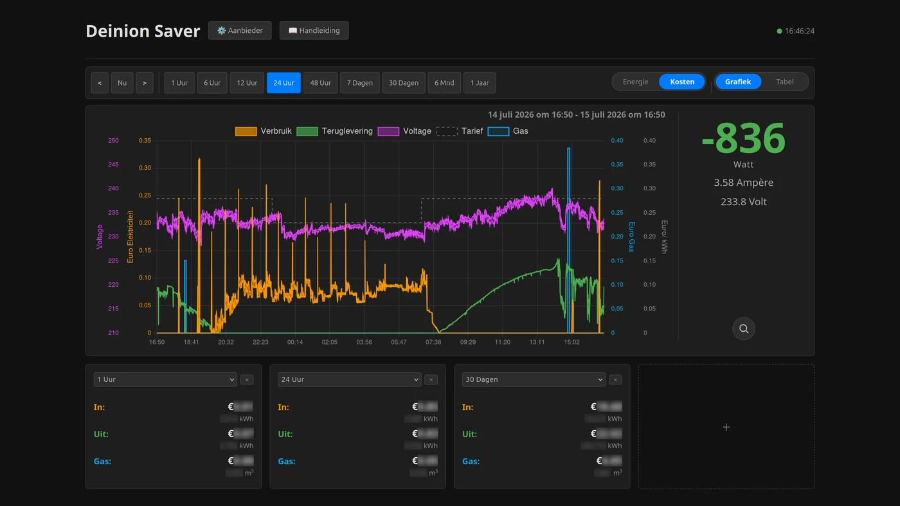
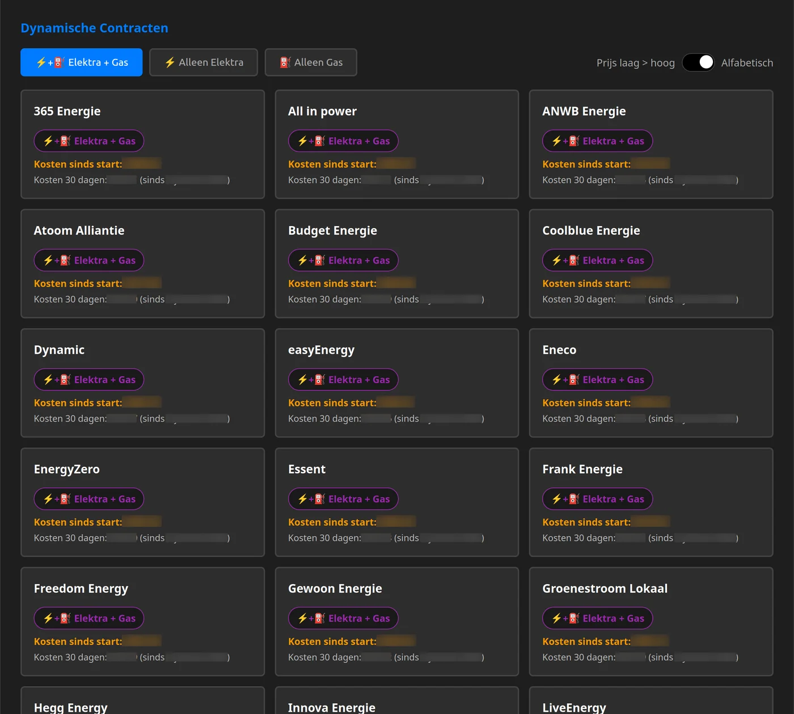

Deinion ontwikkelt praktische, privacyvriendelijke apparaten die huishoudens helpen grip te krijgen op hun energieverbruik en -kosten.
Meet in realtime uw stroom- en gasverbruik via de P1-poort van uw slimme meter, en helpt u op basis van uw eigen verbruiksprofiel — niet op aannames — het voordeligste energiecontract te bepalen. De Deinion Saver vergelijkt voor u meer dan 30 diverse energiecontracten.
Deinion Saver is ons eerste product. Er volgen meer apparaten onder het Deinion-merk.

